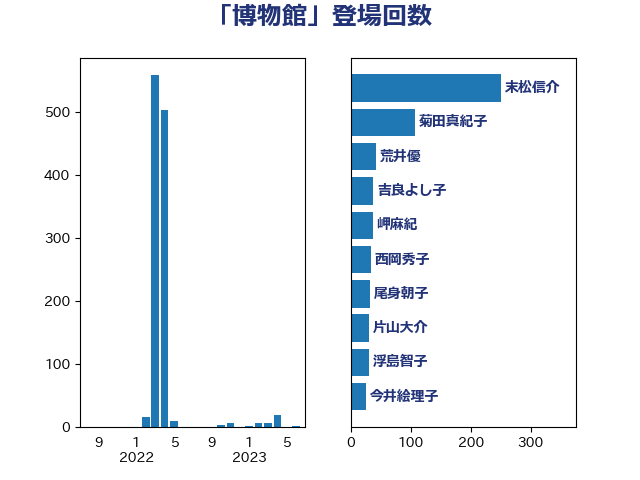

単語「博物館」

| 末松信介 | 自由民主党 | 250 回 |
| 菊田真紀子 | 立憲民主党 | 107 回 |
| 荒井優 | 立憲民主党 | 42 回 |
| 吉良よし子 | 日本共産党 | 38 回 |
| 岬麻紀 | 日本維新の会 | 37 回 |
| 西岡秀子 | 国民民主党 | 34 回 |
| 尾身朝子 | 自由民主党 | 32 回 |
| 片山大介 | 日本維新の会 | 31 回 |
| 浮島智子 | 公明党 | 31 回 |
| 今井絵理子 | 自由民主党 | 26 回 |
| 佐々木さやか | 公明党 | 25 回 |
| 高橋光男 | 公明党 | 21 回 |
| 宮本岳志 | 日本共産党 | 17 回 |
| 伊藤孝恵 | 国民民主党 | 16 回 |
| 舩後靖彦 | れいわ新選組 | 14 回 |
| 義家弘介 | 自由民主党 | 11 回 |
| 金城泰邦 | 公明党 | 10 回 |
| 永岡桂子 | 自由民主党 | 8 回 |
| 鰐淵洋子 | 公明党 | 6 回 |
| 川田龍平 | 立憲民主党 | 5 回 |
| 嘉田由紀子 | 無所属 | 4 回 |
| 林芳正 | 自由民主党 | 3 回 |
| 伊波洋一 | 無所属 | 3 回 |
| 穀田恵二 | 日本共産党 | 2 回 |
| 池田佳隆 | 自由民主党 | 2 回 |
| 杉本和巳 | 日本維新の会 | 2 回 |
| 小泉進次郎 | 自由民主党 | 2 回 |
| 小川淳也 | 立憲民主党 | 2 回 |
| 小宮山泰子 | 立憲民主党 | 2 回 |
| 鈴木隼人 | 自由民主党 | 1 回 |
| 西銘恒三郎 | 自由民主党 | 1 回 |
| 田畑裕明 | 自由民主党 | 1 回 |
| 浅川義治 | 日本維新の会 | 1 回 |
| 梅谷守 | 立憲民主党 | 1 回 |
| 島尻安伊子 | 自由民主党 | 1 回 |
| 岸田文雄 | 自由民主党 | 1 回 |
| 岡田直樹 | 自由民主党 | 1 回 |
| 山本左近 | 自由民主党 | 1 回 |
| 守島正 | 日本維新の会 | 1 回 |
| 大岡敏孝 | 自由民主党 | 1 回 |
| 和田義明 | 自由民主党 | 1 回 |
| 古賀之士 | 立憲民主党 | 1 回 |
| 務台俊介 | 自由民主党 | 1 回 |
| 加藤勝信 | 自由民主党 | 1 回 |
| 住吉寛紀 | 日本維新の会 | 1 回 |
| 伊藤岳 | 日本共産党 | 1 回 |
| 三木圭恵 | 日本維新の会 | 1 回 |
| おおつき紅葉 | 立憲民主党 | 1 回 |